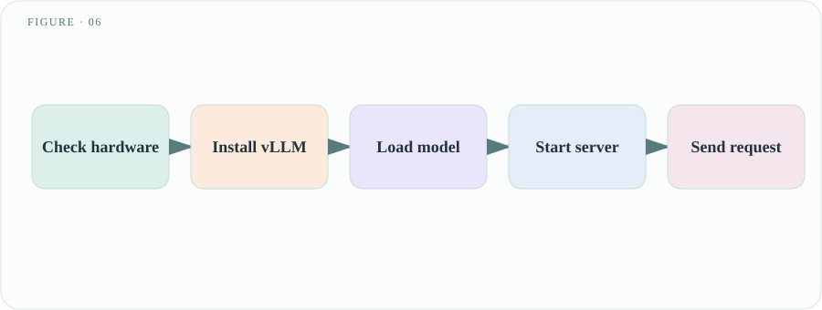

前五章咱们都在讲理论。这一章，卷起袖子动手。从零安装到第一个推理请求，我带你走一遍。后面所有实战章节都基于这一章的环境。

6.1 环境准备
vLLM 对环境要求不算苛刻，但有几个关键点：
| 组件 | 要求 | 检查命令 |
|---|---|---|
| Python | 3.9-3.12 | python --version |
| CUDA | 12.1+ (NVIDIA) | nvidia-smi |
| GPU 显存 | 视模型而定 (7B→16GB+, 70B→140GB+) | nvidia-smi --query-gpu=memory.total --format=csv |
| OS | Linux（推荐）/ macOS（有限支持） | uname -s |
重要：平台、Python、CUDA、PyTorch、驱动与 GPU 支持矩阵会随 vLLM 版本变化。安装前先核对当前安装指南；容器共享内存参数按多 GPU 通信和部署环境配置，不要把 --ipc=host 当作所有场景的必选项。
6.2 安装
官方推荐用 uv（一个比 pip 快 10-100 倍的 Python 包管理器）：
# 先装 uv
pip install --upgrade pip
pip install uv
# 用 uv 装 vLLM（自动选正确的 PyTorch backend）
uv pip install -U vllm --torch-backend=auto
# 验证安装
python -c "import vllm; print(vllm.__version__)"如果你习惯用 pip 直接装：
pip install vllm经验之谈：uv 比 pip 快很多（vLLM 的依赖包很多），而且它能自动处理 CUDA/PyTorch 版本兼容问题。强烈推荐。如果 pip install 太慢，加 -i https://pypi.tuna.tsinghua.edu.cn/simple 用清华镜像。
6.3 离线推理：你的第一个 vLLM 程序
from vllm import LLM, SamplingParams
# 1. 加载模型
llm = LLM(
model="Qwen/Qwen2.5-0.5B-Instruct", # 小模型，方便测试
gpu_memory_utilization=0.90,
)
# 2. 设置采样参数
sampling_params = SamplingParams(
temperature=0.7,
top_p=0.9,
max_tokens=256,
)
# 3. 批量推理
prompts = [
"什么是人工智能？请用一句话回答。",
"用Python写一个斐波那契数列函数。",
"解释一下相对论。"
]
outputs = llm.generate(prompts, sampling_params)
for output in outputs:
prompt = output.prompt
generated_text = output.outputs[0].text
print(f"Prompt: {prompt}")
print(f"Response: {generated_text}")
print("---")跑起来应该看到类似输出：
Processed prompts: 100%|████████| 3/3 [00:02<00:00, 1.47it/s]
Prompt: 什么是人工智能？请用一句话回答。
Response: 人工智能是让计算机系统模拟人类智能行为的学科。
---6.4 在线服务：启动 OpenAI 兼容 API
# 一行命令启动服务
vllm serve Qwen/Qwen2.5-0.5B-Instruct --host 0.0.0.0 --port 8000
# 另一个终端测试
curl http://localhost:8000/v1/chat/completions \
-H "Content-Type: application/json" \
-d '{
"model": "Qwen/Qwen2.5-0.5B-Instruct",
"messages": [
{"role": "user", "content": "请用一句话介绍你自己。"}
],
"temperature": 0.7,
"max_tokens": 128
}'因为兼容 OpenAI 格式，现有代码几乎零改动：
from openai import OpenAI
# 只改 base_url！
client = OpenAI(
base_url="http://localhost:8000/v1",
api_key="not-needed" # vLLM 默认不需要鉴权
)
response = client.chat.completions.create(
model="Qwen/Qwen2.5-0.5B-Instruct",
messages=[{"role": "user", "content": "你好！"}],
)
print(response.choices[0].message.content)6.5 Docker 快速部署
docker run --gpus all \
-v ~/.cache/huggingface:/root/.cache/huggingface \
-p 8000:8000 \
--ipc=host \
vllm/vllm-openai:latest \
--model Qwen/Qwen2.5-0.5B-Instruct| 参数 | 作用 |
|---|---|
--gpus all | 把所有 GPU 暴露给容器 |
-v ~/.cache/huggingface:... | 挂载模型缓存目录（避免每次下载） |
--ipc=host | 共享主机 IPC 命名空间（NCCL 需要） |
常见踩坑：Docker 忘了 --ipc=host 会报 NCCL WARN: Failed to initialize shm 错误。这是因为 NCCL 默认用共享内存做 GPU 间通信。加了这个参数就好。
6.6 常用采样参数速查
| 参数 | 含义 | 推荐值 |
|---|---|---|
temperature | 控制随机性，越高越随机 | 创意任务 0.8-1.0，严谨任务 0.0-0.3 |
top_p | 核采样——只考虑累积概率达到 p 的 token | 0.9 |
top_k | 只考虑概率最高的 k 个 token | 50 |
max_tokens | 最大生成 token 数 | 按业务需求，默认 16 |
stop | 停止字符串或 token ID | ["\n\n", "</s>"] |
好了，第一章到第五章的知识终于落地了。下一章咱们深入了解模型加载和各种配置参数的细节——那些让模型跑得又快又稳的关键参数。
参考资料与证据
- vLLM CLI 指南serve；bench
- vLLM 在线服务文档OpenAI-compatible server